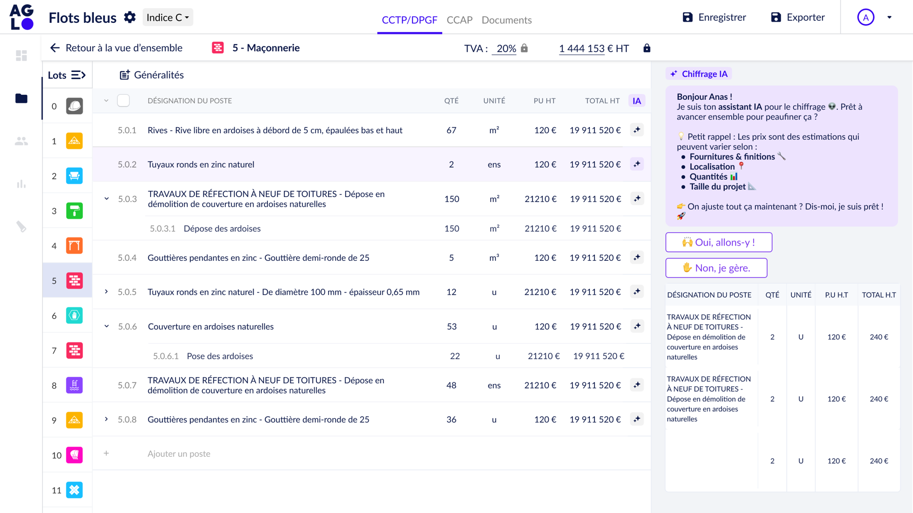
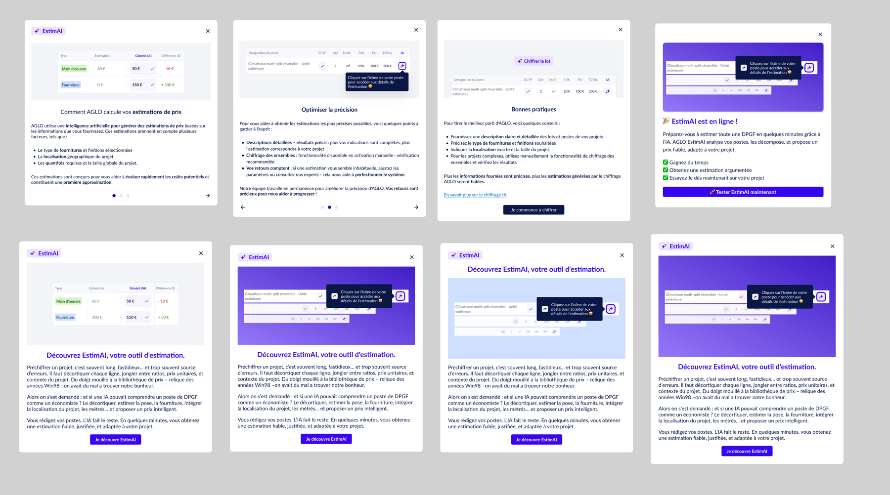
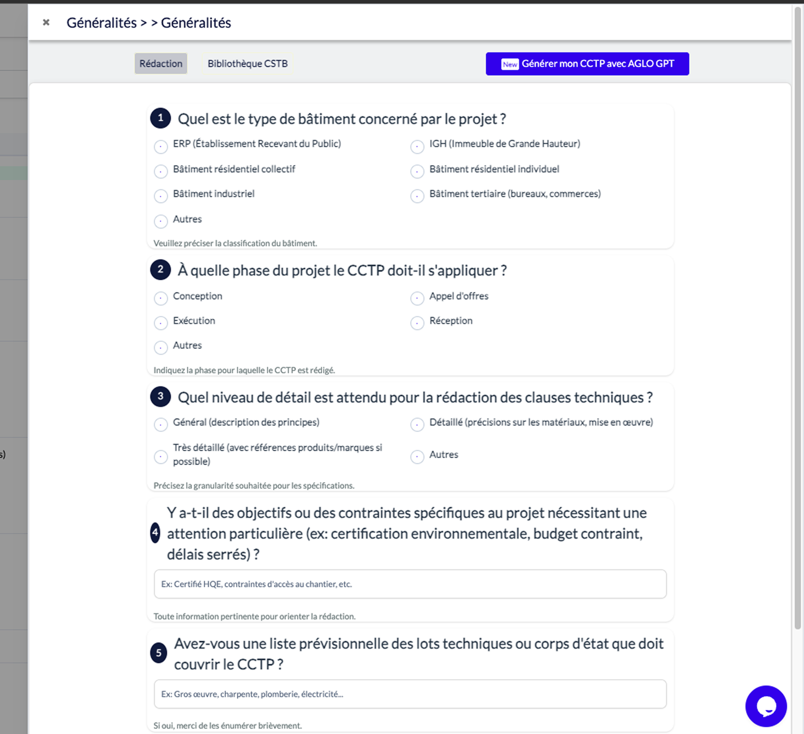
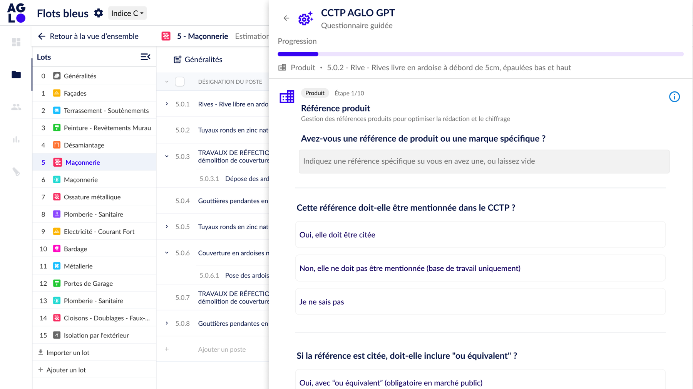

Automatiser le chiffrage des DPGF pour fiabiliser les estimations et réduire le temps de traitement, via un raisonnement IA calibré comme celui d'un économiste.
Product Designer
Prompt Engineer
Porteuse produit/initiative solo
Farah Laoud - de la R&D au lancement
Transmission aux développeurs pour la mise en prod.
Chiffrer un DPGF, c'est décortiquer chaque poste, jongler entre ratios, prix unitaires et contexte de projet, sans autre outil qu'une bibliothèque de prix figée et souvent obsolète. Mon rapport à ce problème s'est construit en trois temps, bien avant que l'IA générative devienne un sujet d'équipe chez AGLO.
Bibliothèques de prix construites moi-même, poste par poste : code, désignation, CCTP, prix unitaire HT.
Scripts reliant tableaux produits/prix, avec recherche automatique de liens d'achat.
Prompt engineering pour faire raisonner un LLM comme un économiste de la construction.
Je n'ai pas rejoint un projet IA existant : je l'ai initié. Prompt engineering (itération de plusieurs générations de prompts, décomposition pose/fourniture, structuration), cadrage produit, pilotage du planning, kickoff, tests et maquettage, dev et marketing, lancement, puis design de l'expérience et transmission aux développeurs pour le déploiement.
Première direction explorée : un assistant conversationnel qui dialogue avec l'utilisateur pour affiner le chiffrage poste par poste.
Écartée pour tenir le calendrier : il fallait plus simple et plus rapide à livrer. Nous avons conservé le tableau existant et repris le principe dans un panneau latéral, plus lisible à côté des lignes de chiffrage.

Sur un métier où une erreur de chiffrage coûte cher, l'automatisation totale était exclue. L'IA décompose son estimation en fourniture et main-d'œuvre, ligne par ligne, et laisse le dernier mot à l'économiste : adopter le prix proposé, ou conserver le sien.
Une IA qui annonce un prix doit expliquer d'où il vient. J'ai conçu et rédigé les modales d'accueil : comment le calcul fonctionne, comment obtenir des estimations plus précises, quelles bonnes pratiques adopter. Sans référence existante sur laquelle m'appuyer, l'exercice le plus difficile a été d'être à la fois concise et claire.

Vue d'ensemble des variantes rédigées et mises en page.
En parallèle du chiffrage, la génération de pièces écrites par IA. Le travail n'était pas graphique mais structurel : construire l'arborescence des questions, définir les catégories, nommer, synthétiser. 10 162 CCTP générés sur l'année.

Avant / un formulaire numéroté, dense, sans hiérarchie ni aide à la décision.

Après / questionnaire guidé par étapes, options expliquées, progression visible, et un "Je ne sais pas" à chaque question.
Je n'ai pas attendu qu'un sujet IA arrive sur mon bureau : je l'ai créé à partir d'un problème métier réel, avec les outils que j'avais sous la main.